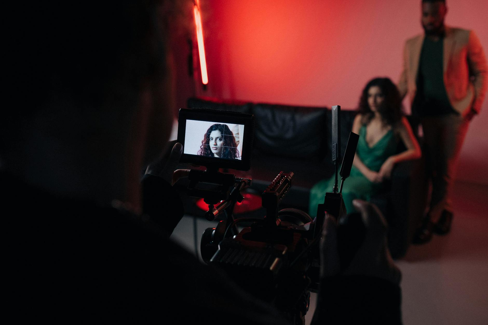

■ 说透 / SHUOTOU · 知览
SUBTITLE
台前还是演员和真人镜头，先被 AI 吃进去的，是编剧、分镜、剪辑、投放和整条流水线。

凌晨两点，一个横店的短剧团队还亮着灯，编剧在改第三版分镜脚本，剪辑师在拼明天要投的三条预告片，运营在换第五版封面图，配音那边催着要终版台词，说白了就是一个字，赶。这种节奏在短剧行业不算新鲜，2025年中国微短剧市场规模接近900亿元，月活用户7.18亿，一年备案的短剧数量超过万部，每个团队都在拼速度拼产能。但你要是现在再去看同样一间工作室，会发现一件有意思的事：镜头前站着的还是那个演员，妆还是人化的，台词还是嘴巴说的，可坐在后面改分镜、切预告、配旁白、做海报的那些工位，已经少了好几个人。
那这些人去哪了？不是被裁了——好吧，有一部分确实是被裁了——更准确的说法是，他们干的活被工具接走了。有戏AI在2026年1月开了内测，号称能把传统短剧从创意到初剪的周期从15天压到1到2天，内置300多种音色，自动根据剧本生成分镜脚本。华策影视更早，拿自研的"有风"和"国色"两个垂类模型去做剧本评估、AI译制配音，官方数据是制作效率提升40%，从创意到初剪的周期缩短超过70%。阅文集团和中文在线也在搞类似的事，把原来11个手动环节压缩成3个，你想啊，剧本拆分镜、分镜配参考图、参考图喂给Seedance 2.0生成视频、再丢进剪映自动拼接加字幕加配音，这套流水线跑下来，以前需要十几个人干一周的活，现在三四个人两天就能出片。
DATA — 短剧幕后 AI 渗透率（2026 年）
编剧/分镜 — 有戏AI、漫剧工场、ELSER.AI 等平台提供全链路自动化，剧本→分镜→角色→配音一条龙
剪辑 — 剪映AI文字成片、对话式剪辑工具占比升至 42%，用户效率提升 420%
配音 — 300+ AI音色库覆盖多方言和情绪，Perso AI 支持 33+ 语言自动配音+口型同步
海报/投放素材 — AI批量生成封面和投放创意，单条成本降至传统方式的 1/5
— 01 —
但这里就出现一个很矛盾的信号。就在4月15日，第十三届中国网络视听大会上，抖音集团宣布投入5亿元专项资金，继续扶持真人短剧内容创新和现实题材深耕，同步推出了"短剧创作者中心"，说要做分账透明化、降低创作门槛。红果短剧也没含糊，全年内容总投入预算预期增幅超过40%，推出了"果燃计划"，单个真人短剧项目最高能拿200万元资金扶持。嗯。。平台在真金白银地砸真人短剧，信号再明确不过了——台前这张脸值钱，真人演的情绪、表情、那种"活人感"，目前还是流量的核心锚点。
那你说平台是不是真觉得AI不行？也不是。同一个红果，2月份悄悄更新了漫剧激励政策，AI仿真人短剧的分成系数定在了60%，是所有漫剧类型里最高的，3D动画漫剧50%，2D的40%，表情包动态漫剧10%，静态解说1%。S+级AI仿真人剧每分钟保底6000元，单部保底54万到72万元。说白了，平台一只手在给真人短剧发奖金，另一只手在给AI仿真人短剧开绿灯，两笔账都算得很清楚。
这种"台前真人、幕后AI"的格局不是谁规划出来的，是成本结构自然演化的结果。你要理解短剧这门生意的利润模型：一部竖屏短剧，80到100集，每集一两分钟，拍摄周期通常七到十天，后期再加一周，投放烧钱才是大头。在这个模型里，编剧、分镜、粗剪、配音、封面设计、投放素材这些环节，本质上都是"重复性标准化劳动"，每部剧的套路相似度极高，霸总剧有霸总剧的分镜模板，甜宠有甜宠的节奏公式，悬疑有悬疑的转场逻辑。这种高度模式化的工作，天然就是AI最擅长接管的领域。
Toonflow、LinghuiAI这类工具已经做到了全链路自动化，从剧本到分镜到角色生成到配音对嘴到后期剪辑，AI Agent自动调度整条流水线。剪映那边更直接，2026年把AI功能和传统剪辑彻底打通了，声音克隆、直播高光切片、AI文字成片，以前需要剪辑师坐在工位上一帧一帧拖的活，现在用自然语言说一句"把第三集的高潮片段剪成15秒竖版预告"就能出成品。Recapo.ai首创的chatcut模式更激进，对话式剪辑工具在2026年3月的市场占比已经升到了42%。
短剧赛道已显现AI驱动的'从点到链到面'的全产业渗透趋势。
— 华策影视
这句话不是公关话术，是财报逻辑。华策2025年上半年短剧月产能提升到20部，营收同比增长115%，靠的不是多雇了一倍的人，而是AI把中间环节的人力成本压下去了。对制作公司来说，这笔账太好算了：一个初级剪辑师月薪八千到一万二，一个AI剪辑工具年费可能就几万块，但能干三四个人的活，而且不需要休息不会改错版本不会半夜发消息说"我离职了"。
— 02 —
但这里得加一个刹车。AI真的能把所有幕后的活都接走吗？目前的答案是：接不完。
短剧行业有个说法，AI的表演能做到70到80分，但你要想要90分以上的效果，得反复抽卡，抽上百次甚至上千次，产生的成本可能比直接请真人演员还高。这不是段子，是制作团队的实际反馈。AI生成的面部表情在处理"微表情"这个层面还是很粗糙的，比如一个角色在说谎时眼神的细微闪躲、被背叛后先愣住再慢慢变红的眼眶——这些复杂情绪链条，AI目前做不到一次生成就到位，你想啊，人类演员是在用整个身体、整套肌肉记忆去表达情绪，AI是在用像素拼概率，底层逻辑就不一样。
而且有一个更深层的原因：短剧的核心变现逻辑是"情绪付费"。观众愿意在第30集付费解锁后面的内容，是因为他对那个角色产生了真实的情感投射，想看那个"活人"接下来会怎样。这种parasocial bond——就是观众和屏幕里那个人之间的单向情感联系——建立在"我看到的是一个真人"这个底层信任上。用行业里的话说，真人演员有"活人感"，能满足观众的窥私欲，能让人觉得"这个人可能真的存在"。AI目前还给不了这个东西。
所以你会看到一个很有意思的分层：台前演出，真人依然是刚需；幕后流水线，AI已经在大面积接管。两者不是替代关系，是分工关系。平台也在用政策工具强化这种分层——抖音的5亿扶持资金专门给真人短剧，红果的高分成系数留给AI仿真人内容，广电总局从4月1日起要求所有动画微短剧必须备案，未备案的存量内容全网下线。监管在画线，资本在站队，但两条线画的不是"谁赢谁输"，而是"谁在台前谁在幕后"。
这件事最值得记住的不是某个工具多厉害，也不是某个平台砸了多少钱，而是一个产业结构的事实：当一个行业的核心资产是"台前那张脸"，而生产链的其余部分都是标准化可重复的工序时，AI不需要取代台前，只要把幕后吃掉就够了。镜头前站着的人没变，但他身后的片场，已经安静了不少。
· · ·
ZAYEN知览
说透 · SHUOTOU · 知览